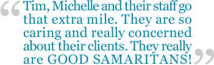

|
6 Important Reasons to Choose Good Samaritan CareGivers…
- Our Knowledge, Experience and Commitment
We have advanced degrees in healthcare, over 50 years of combined healthcare management experience and an unsurpassed commitment to the elderly.
- Our exclusive membership with “The Senior’s Choice®” Network
As a national support network for in-home care companies committed to providing the best in quality care, The Senior’s Choice® (TSC) has been involved with in-home care for many years and has grown to more than 250 companies throughout North America.
- Our Caregivers – Selection, Hiring, Orientation and Training
Our Caregivers quality starts with the Selection process. Not everyone meets the qualities we seek in our Caregivers – Caring & Compassion. Following extensive background checks, including references, criminal and DMV checks, only those selected are invited to our Orientation. In Orientation our Caregivers learn our unique approach to assisting seniors. Our proprietary Certified Companion Aide (CCA®) Program is nationally recognized certification program offered to our professional staff of caregivers. Each Good Samaritan CareGiver is trained and tested in 19 subject areas, ranging from transferring to dementia. This certification is managed and directed by TSC and can only be offered by them.
- Our “Safety Net” of Services
We offer the most comprehensive, cost-effective service menu. This allows us to provide the most personalized, individualized level of services to maintain senior’s independence, safety, security. We weave a tightly woven “safety-net” of services to meet also every budget.
Good Samaritan Certified Companion Aides – in-home caregivers
DirectLINK® - 24/7 In-home Emergency Monitoring
SafeSenior® Calls – Daily Well Being & Medication Reminder Calls
Arrival Assurance – Telephonic clock-in & clock-out
WelcomeHome – Transportation to and from medical appointments:
 Physician appointments Physician appointments
Medical Testing
Medical Procedures
Discharges from Hospital and Nursing Homes
Plus, 4 hours of service to make a comfortable adjustment to Home
VA Aid and Attendance Benefits – assistance qualifying Veterans and spouses for up to$1949 per month in benefits for home care services
- “The Good Sam Way”—Our Core Values
Compassion. Our staff exhibits the caring and compassion of a Good Samaritan and practices it daily.
Quality Training. Our caregivers possess greater confidence because Good Samaritan CareGivers invests in their education and training.
Professionalism. A Good Samaritan CareGivers is dedicated to always providing caregivers who are professional in both action and appearance.
Consistency. Our caregivers strive for timeliness and dependability with each and every visit.
Integrity. We will not tolerate anything less than absolute honesty and reliability with our qualified staff of caregivers.
- “The Good Samaritan CareGiver Experience”—What you can expect from us
Arrival Assurance. Our eRSP© scheduling software includes Telephony, a web-based system, that allows our Caregiver to use the Client’s phone to call a toll-free phone number to clock-in and clock-out. Our Client’s families have access to this information to verify the Caregiver’s arrival and departure. We receive a text message and email if the call is not made within 10 minutes of the scheduled arrival and departure.
Confidence. Good Samaritan CareGiver leads the industry in caregiver retention due to our commitment to honest hiring practices and first class training programs.
Compatibility Guarantee. The eRSP© software matches Client and Caregiver likes and dislikes to assure compatibility. If you are not completely satisfied with your caregiver, we will replace him/her without hesitation.
Quality Assurance. We conduct spontaneous in-home supervisory visits to ensure quality care.
Adequate Coverage. Good Samaritan CareGivers boasts one of the largest and most qualified in-home care staffs in the state.
24/7 On-Call Support. For those emergencies that occur after business hours.
Security. All caregivers are thoroughly screened, bonded, and insured. Good Samaritan CareGivers is incorporated in New York State and licensed to do business in Erie County.
|